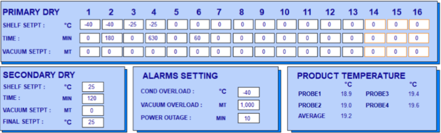
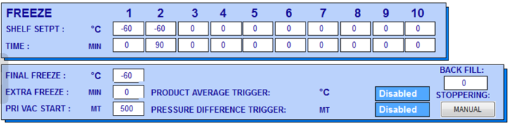
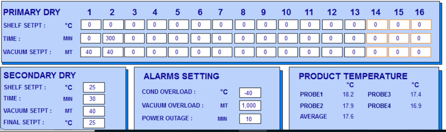

Module 1: Trees & Freeze Dryers
Part 2: Freeze Dryers
Freeze Drying Steps:
1. Freezing
2. Primary Dry
3. Secondary Dry
Freezing
This phase is crucial in the freeze-drying process. The freeze dryer lowers the material's temperature below its triple point to ensure sublimation rather than melting, thereby preserving its physical structure.
Primary Dry (sublimation)
The next stage is primary dry, also known as sublimation, during which the pressure decreases, and heat is applied to the substance to facilitate the sublimation of water. The vacuum in the freeze dryer accelerates this sublimation process. Furthermore, the freeze dryer's chilly condenser offers a platform for water vapor to attach and solidify, safeguarding the vacuum pump from water vapor. Roughly 95% of the moisture within the substance is eliminated during this phase. Primary drying might progress slowly, and excessive heat can cause changes to the material's composition.
Secondary Dry (adsorption)
In the final phase, known as secondary drying or adsorption, the focus is on eliminating ionically-bound water molecules. By elevating the temperature beyond that of the primary drying phase, the bonds between the material and water molecules are disrupted. This ensures the retention of a porous structure in the freeze-dried materials. Once the freeze dryer finishes its operation, the vacuum can be relieved using an inert gas before sealing the material. Typically, most substances can be dried to achieve a residual moisture content of 1-5%.
Question 1:
Q
Phase Changes

Factors
Two primary factors, namely heat and pressure, dictate the phase (solid, liquid, or gas) that a substance will assume. To manifest a specific phase, both temperature and pressure must fall within certain thresholds. In the absence of these conditions, the substance cannot adopt that particular phase. The accompanying chart illustrates the requisite pressure and temperature parameters for different phases of water. As depicted in the chart, water can exist in a liquid state at sea level (where pressure equals 1 atm) if the temperature falls between the freezing point at sea level (32 degrees Fahrenheit or 0 degrees Celsius) and the boiling point at sea level (212 F or 100 C). However, if the temperature rises above 32 F while maintaining atmospheric pressure below 0.06 atmospheres (ATM), the water reaches a sufficiently warm state for thawing, yet lacks the requisite pressure for liquid formation, thus transitioning into a gas.
Sublimation
Freeze-drying hinges on the fundamental concept of sublimation, the direct transition of a solid substance into a gas phase. Similar to evaporation, sublimation takes place when a molecule acquires adequate energy to break away from its neighboring molecules. Water undergoes sublimation from its solid state (ice) to its gaseous state (vapor) when its molecules attain the necessary energy to break free, yet the conditions are unsuitable for the formation of a liquid phase.
Freeze Drying Process
This is precisely the function of a freeze-drying apparatus. A standard machine comprises a freeze-drying chamber equipped with multiple shelves linked to heating elements, a freezing coil connected to a refrigerator compressor, and a vacuum pump. In most machines, the material slated for preservation is positioned on the shelves while still unfrozen. Upon sealing the chamber and initiating the procedure, the compressors activate to reduce the chamber's temperature. The material solidifies as it freezes, thereby isolating the water from its surroundings at a molecular level, despite the water's continued presence. Subsequently, the machine activates the vacuum pump to expel air from the chamber, reducing the atmospheric pressure to below 0.06 ATM. Meanwhile, the heating units gently apply heat to the shelves, prompting the ice to undergo a phase change. Given the low pressure, the ice transitions directly into water vapor. This vapor exits the freeze-drying chamber, passing over the freezing coil where it condenses into solid ice, akin to water forming frost on a chilly day. This cycle persists for numerous hours, sometimes even days, allowing the material to gradually desiccate. The protracted duration of the process is essential as excessive heating can alter the material's composition and structure significantly. Moreover, hastening the sublimation process may generate more water vapor within a given timeframe than the pumping system can effectively remove from the chamber, potentially reintroducing moisture to the material and compromising its quality. Upon achieving sufficient dryness, the material is sealed within a moisture-free package, often supplemented with an oxygen-absorbing substance. If securely sealed, the material can remain shelf-stable for an extended period, retaining its integrity until rehydrated with a small amount of water (though minute moisture traces may remain, leading to eventual spoilage). Under ideal circumstances, the material undergoes the entire process with minimal alteration.
Question 2:
q2
Freeze Dryer Operation
Optidry
During each stage of the freeze drying protocol, there are several steps that the freeze dryer will conduct. Each step has a time and temperature associated with that step. The final freeze & drying steps additionaly have a pressure associated with them. For the protocol to progress through a step, the internal temperature and pressure must reach the listed values in the protocol. Additionally, if there is a time value, the protocol must remain in that step for the listed time.
Freeze Dryer Protocols
ASAY-SFW-0014
This protocol is used in the freeze drying process of our film array pouches. In step 1 of protocol ASAY-SUB-0014, the temperature is set to -60 C while the time is set to 0. This means that to progress to the next step, the internal temperature of the freeze dryer must reach -60 C. Due to the time being set to 0, there is no required amount of time that the freeze dryer must be in that step. However, in step 2, the temperature setting remains at -60 C, while the time is set to 240 minutes. This implies that the freeze dryer will remain at -60 C for 240 minutes before continuing to the next step. The freezing stage of the protocol ends with final freeze, which holds the temperature at -55 C for 5 minutes at a pressure of 500 MT.
Up next in this protocol is the drying stage. Where the freeze dryer reduces pressure to 0 MT, while slightly warming up the temperature to -40 C. The protocol progresses through the drying steps before finishing the protocol in secondary dry.
ASAY-SFW-0020
This protocol is used in the freeze drying process of our magbead pellets.
 Header
Paragraph
Header
Paragraph


Practice Problem 1:
q3
Practice Problem 2:
q4
Practice Problem 3:
q5